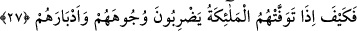

söylediklerini “biliyor.”
Burada münâfıklar ba’z kelimesiyle, Yahudilerle savaş yapılıp onlar yurtlarından
çıkarılmadan önce küfürlerini ızhar etmeyi ve inkâr durumlarını bilfiil ortaya koymayı
murad etmişlerdir. Çünkü münafıklar bir takım dünya menfaatlerinden dolayı gûyâ
îmanlarını izhar ediyor (kendilerini mümin ve Müslüman olarak gösteriyor)lardı.
Zorunluluk olmadan küfür ve inkârlarını ızhâr ederek durumlarını bilfiil ortaya koymak
istemiyorlardı.
27. Ya melekler, canlarını alırken yüzlerine ve sırtlarına vurarak dövünecekleri
zaman durumları nice olur?
O kâfirler hayatlarında her türlü hîle ve entrikaları yapıyorlar, peki “ya melekler,”
ölüm meleği Azrail (a.s.) ve onun yardımcıları bunların “canlarını alırken,” bu kâfirler
pişmanlıklarından dolayı kendileri yahut onların canlarını almak üzere gelen melekler
demir kamçılarla onların “yüzlerine ve sırtlarına vurarak dövünecekleri zaman
durumları nice olur?”
Kâşifî şöyle demiştir: Melekler onların, Hak’tan yüz çevirdikleri için yüzlerine, ehl-i
Hakk’a sırt çevirdiklerinden dolayı da sırtlarına vururlar.
Bu durum, onların pek korkunç, vahim ve fecî şekilde canlarının alınacağını tasvirdir.
Abdullah b. Abbas (r.a.) şöyle der: Melekler mâsiyet üzere ölen herkesin yüzüne ve
sırtına vurur.
28. Bu böyledir. Çünkü onlar, Allah’ı kızdıran şeylerin ardınca gittiler. O’nu râzı
edecek şeylerden hoşlanmadılar. Allah da onların amellerini boşa çıkardı.
“Bu” korkunç ölüm, onların ruhlarının kabzedilmesi “böyledir. Çünkü onlar, Allah’ı
kızdıran şeylerin” küfür ve mâsiyetlerin “ardınca gittiler.” Öyle bir şeye tâbi oldular
ki Allah Teâlâ’nın hışmını, öfkesini celbettiler. Böylece üzerlerine Allah’ın gadabı
gerekli oldu. İman ve tâat gibi “O’nu râzı edecek şeylerden hoşlanmadılar.” Bundan
dolayı “Allah da onların” îmanlı oldukları dönemde yapmış oldukları tâatleri yahut
mümin olarak yaptıkları takdirde faydalanacakları “amellerini” artık bu küfür
durumundan sonra “boşa çıkardı.” Zira küfür ve mâsiyetler, amellerin silinip yok